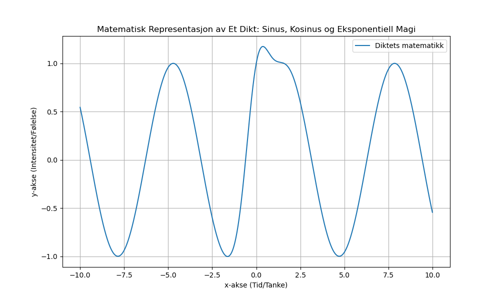

Dagens dikt
I en skog av tanker så dyp,
Der tallene danser, et usynlig stup.
Med rot og kraft i spiralens makt,
En eksponent vokser, en naturens takt.
Naturen gir mening i kurver og strekk,
Med bølger som puster i et evig svekk.
Matematikk tegner den sanselige sti,
Et univers av magi, la oss nå bli fri.
Sinus og kosinus leker i par,
Med e som en venn i uendelig svar.
Grafen vi lager er poesi i seg selv,
La Python male, med eleganse som kveld.

Kode
import numpy as np
import matplotlib.pyplot as plt
# Definer diktets matematisk inspirasjon: en kombinasjon av sinus, kosinus og eksponentielle kurver
x = np.linspace(-10, 10, 1000)
y1 = np.sin(x) # Sinus som bølger i takt
y2 = np.cos(x) # Kosinus som lekende par
y3 = np.exp(-x**2) # Eksponent som naturens kraft
# Kombiner dem til en representasjon av diktet
y_total = y1 + y2 * y3
# Plot grafen
plt.figure(figsize=(10, 6))
plt.plot(x, y_total, label='Diktets matematikk')
plt.title('Matematisk Representasjon av Et Dikt: Sinus, Kosinus og Eksponentiell Magi')
plt.xlabel('x-akse (Tid/Tanke)')
plt.ylabel('y-akse (Intensitet/Følelse)')
plt.grid(True)
plt.legend()
plt.savefig('2025-03-20-19-45-27.png')